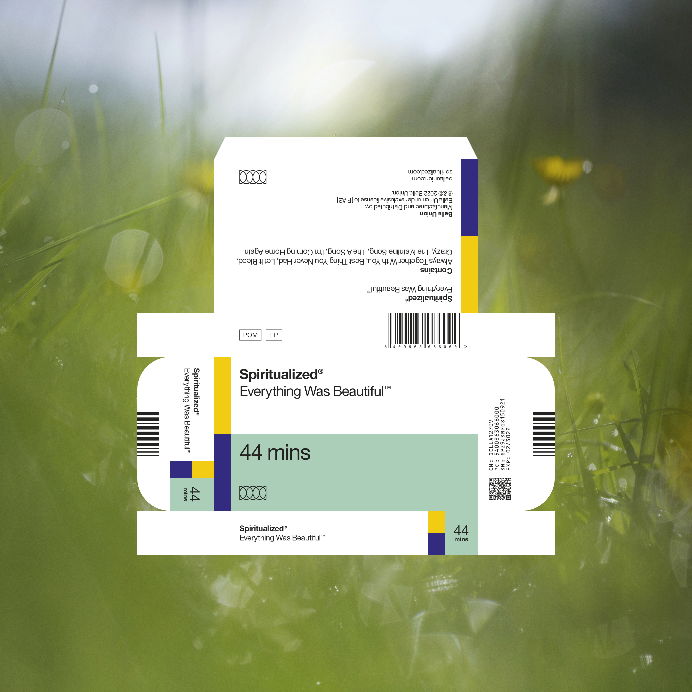

Tay’s top 50 songs of 2022
Don’t forget to check out my top albums list! albumngs
And superlatives! slurperatives
| Song Title | Artist | ||
|---|---|---|---|
| 50 | Pink Venom | BLACKPINK | |
| 49 | Rip Off | Momma |

|
| 48 | 2am | Foals | |
| 47 | Talk | beabadoobee | |
| 46 | July! | JELEEL! | |
| 45 | Be Cool | Maggie Rogers | |
| 44 | Flower (In Full Bloom) | Luna Li |

|
| 43 | Famously Alive | Guerilla Toss |

|
| 42 | Simulation Swarm | Big Thief |

|
| 41 | Gone Girl | SZA |

|
| 40 | Slaughterhouse | Chat Pile | |
| 39 | Fix Bayonets! | Preoccupations |

|
| 38 | Holding Back | BANKS |

|
| 37 | Mermaid Airplane | Guerilla Toss |
|
| 36 | graves | Purity Ring | |
| 35 | Tetramorph | Rachika Nayar |

|
| 34 | new body rhumba (from the film White Noise) | LCD Soundsystem | |
| 33 | Blending | High Vis |

|
| 32 | Working for the Knife | Mitski | |
| 31 | Call My Bluff | Pusha T |

|
| 30 | Jennifer Hindsight | Peel Dream Magazine |

|
| 29 | Off Goes The Light | Bibio | |
| 28 | Seeds | A.G. Cook |

|
| 27 | the dealer | Nilüfer Yanya | |
| 26 | Ruby | Hovvdy | |
| 25 | Gotta Let It Go | Joyce Manor | |
| 24 | Crash | Charli XCX |

|
| 23 | Fallout | Yo La Tengo | |
| 22 | Always Together With You | Spiritualized |  |
| 21 | World Wide Pop | Superorganism |

|
| 20 | This Is A Photograph | Kevin Morby |

|
| 19 | Satin Cash Pt. II | Wavedash | |
| 18 | You When You’re Gone | Anxious | |
| 17 | Expert in a Dying Field | The Beths | |
| 16 | Hysteric | White Lung |

|
| 15 | Coochie (A Bedtime Story) | Shygirl | |
| 14 | Detective Lieutenant | Drug Church |

|
| 13 | In The Eyes Of Our Love | Yumi Zouma |

|
| 12 | Runner | Alex G |

|
| 11 | Nobody | Knifeplay |
| Top 10 means 9 sentences about songs I like and 2 sentences about a song I really like. |
10. Alvvays - “Belinda Says”

Alluding to the great Belinda Carlisle, “Belinda Says” worries about finally finding what you’re looking for. The song flickers between quiet verses and an absolutely shredding, distorted choruses. Lost in paradise but still working to figure out what that means.
9. Steve Lacy - “Bad Habit”

Propelling to number 1 and sitting there, this song marks some awesome crossover success for Steve Lacy and represents a totally fun, groovy track. Crooning vocals express a missed opportunity turning into something more, affection finally being realized and actualized. A love song come full circle.
8. MUNA - “Solid”

We all have solid babes in our lives. This song goes out to them.
7. Soul Glo - “Gold Chain Punk (whogonbeatmyass?)”

I go over this song in more detail in my album review, so let me leave you with a life hack: if you are feeling down about things just say to yourself “who gon beat my ass?”
6. And So I Watch You From Afar - “VIII Jettison”

The climax of Jettison’s 39 minute story, the eponymous song winds its own wistful tale as it returns and touches on all of the previous points of the album.
5. Anxious - “Growing Up Song”

One of the few graces of getting older is the pain you went through will start to fade away. Sometimes apathy is the only balm left for us who have been through so much. Sometimes, that can turn into forgiveness. I think that’s what this song is about.
4. Beach House - “Sunset”

This song is really pretty and also really fun to play on guitar.
3. Their / They’re / There - “A Symphony of Sparrows”

Their / They’re / There combines the lyricism of Into it. Over it. with some absolutely nasty, noodley guitar riffing. The bridge on this song leaves me speechless.
2. Let’s Eat Grandma - “Levitation”

I might be suffering from a little recency bias, since I started listening to this song a lot more in December, but I think its pop and synth instrumentation bring such a fun direction to the song.
1. Black Country, New Road - “Basketball Shoes”

“Basketball Shoes” is like 13 minutes long, has like 8 different movements, a bunch of brass, and Isaac Wood’s wailing vocals to tie it together. This song really cinches the ending of Ants From Up There, and it is a great little sample of the whole album itself. But like most things, you shouldn’t just jump to the end. Try to enjoy all of Ants From Up There, there aren’t many albums like it.
If you haven’t already, please pay the toll for visiting my website.
You can check out the albums and superlatives above. Here is a
playlist of these songs in order, no shuffling:
https://open.spotify.com/playlist/6IX7K4Niqy6OnLEfNKIOZL?si=ng-iCj2NQ9mtFLrF3fzdaw